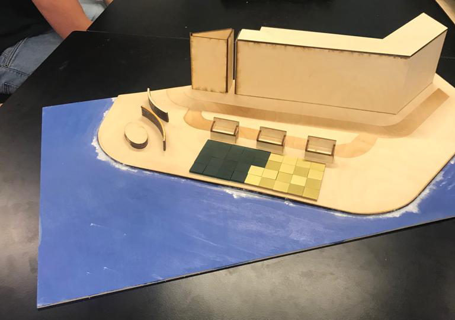
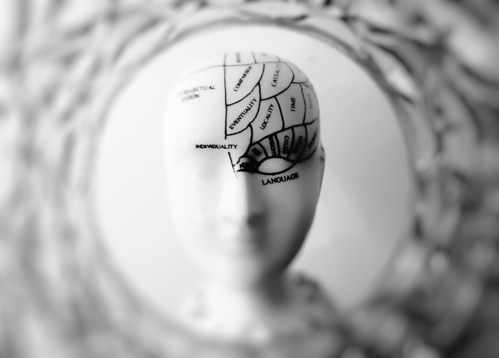

Personalia
- Naam: Daan Meijs
- Geboortedatum: 10/09/1999
- Mobiel: +31 634146579
- E-mail: danielmeijs@gmail.com
- Github: https://github.com/TortleTurtle
- Linked-In: www.linkedin.com/in/d-meijs
- Opleiding: Creative Media & Game Technologies
- CV: Curiculum Vitae

Over mijzelf
Hallo ik ben Daan, student CMGT, muziekliefhebber, gamer en sciencefiction enthousiast. Op mijn opleiding leer ik het ontwerpen, ontwikkelen en testen van digitale of interactieve producten. Onderwerpen binnen mijn vakgebied die mij aanspreken zijn AI / Machine Learning, gamification en IoT.
Hieronder showcase ik een paar projecten waaraan ik gewerkt heb. Hierin leg ik vooral het ontwikkelproces uit. Voor code kan je mijn github bezoeken.
Cuppy
De slimme beker
Cuppy is een ‘slimme’ personaliseerbare beker. Dit concept heb ik ontwikkeld samen met mijn team in de eerste twee periodes van het tweede schooljaar. Ons doel was om het gebruik van wegwerpbekers te verminderen op onze locatie.
Om dit voor elkaar te krijgen zijn we gaan samenwerken met Césant de cateraar van onze locatie. Wij mochten hun bekers gebruiken om te prototypen en hebben we afspraken gemaakt over de verkoop en gebruik. De bekers maakte we aantrekkelijker voor de doelgroep, personeel en leerlingen, door de beker draagbaarder te maken, ‘slim’ te maken door middel van een NFC-sticker en de beker te personaliseren met behulp van een lasersnijder.
Binnen dit project heb ik mij gefocust op de doelgroep. Ik heb interviews afgenomen en onderzoek gedaan om waardevolle insights te verzamelen. Daarnaast was ik teamleider en heb ik bijgedragen aan de webshop door de database op te zetten en relaties vast te leggen met behulp van Laravel.
Wil je meer weten over dit concept? Bekijk dan de video, lees het concept document en bekijk de git repository.
RetroTiles
Een kleiner project bedacht in mijn eerste jaar Creative Media & Game Technologies. De opdracht was om de waarde van een locatie in Rotterdam te verhogen. Mijn locatie was de Maaskade i.d.o.v. huisnummer 173. Na deskresearch, context onderzoek en een creatieve sessie kwamen ik en mijn team met het concept RetroTiles: Lichtgevende tegels waarop klassieke arcade games gespeeld konden worden. Met dit concept wilden we zowel de jongere doelgroep (basisschoolkinderen) en de oudere doelgroep 25 tot 40 jaar aanspreken.
Voor het prototype hebben we een Arduino met een keypad en ledlampjes gebruikt en heb ik een schaalmodel van de omgeving gemaakt met behulp van Fusion 360 en een lasersnijder.

Essay
The Uploading of the Mind
Als science fiction fanaat ben ik erg geïntrigeerd door concepten zoals Mind Uploading. Voor het vak Techniek Filosofie heb ik dit onderwerp gekozen om een essay over te schrijven met als stelling: “Mind Uploading is technisch gezien mogelijk”. Voor mijn onderzoek heb ik interviews en korte seminars met of van wetenschappers bekeken en wetenschappelijke artikelen gelezen.
Het leuke aan onderzoeken zoals deze is om te zien dat mensen al volop bezig zijn met de techniek en zelfs al nadenken over de gevolgen zoals ‘wat als er twee instanties van jouw bewustzijn zijn?’. Als je geïnteresseerd bent kan je het essay hier lezen.
